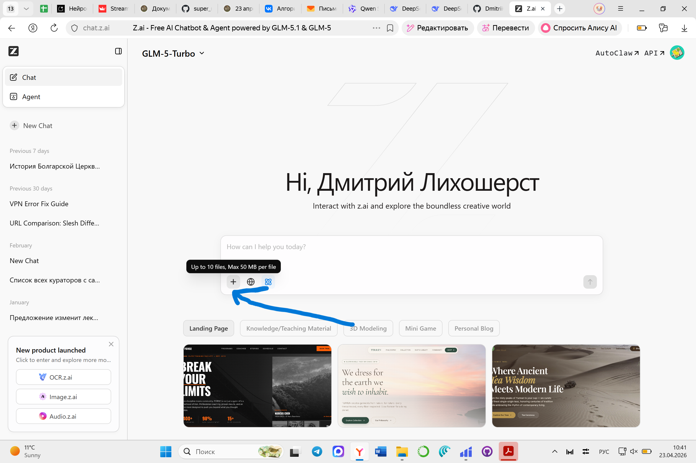
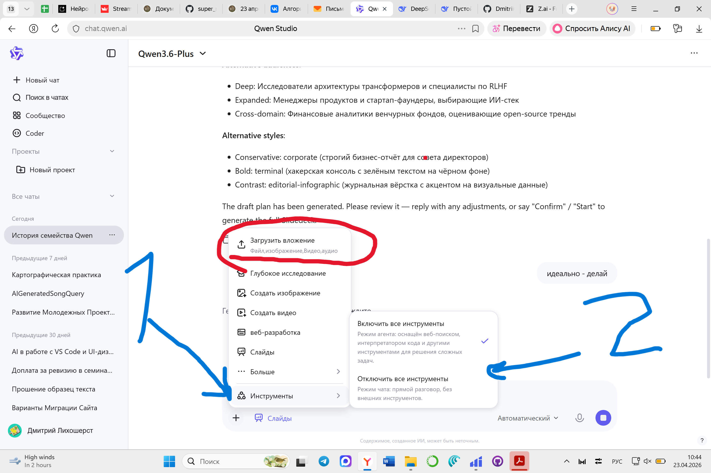
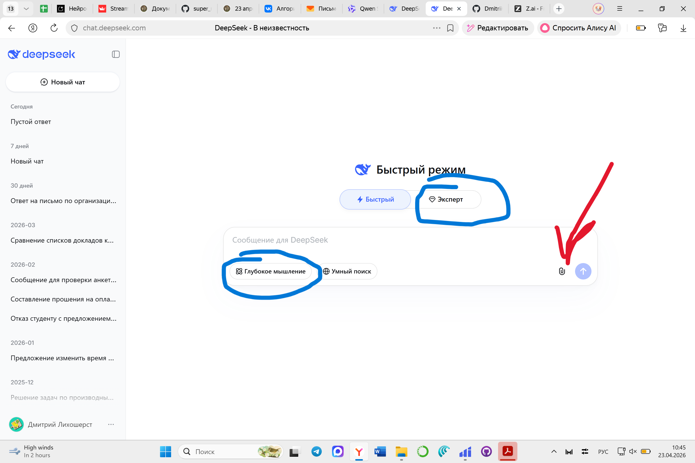
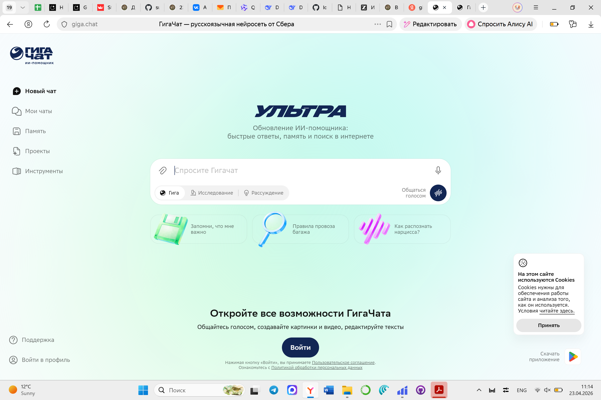
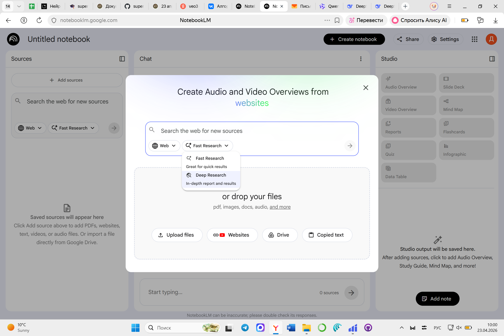
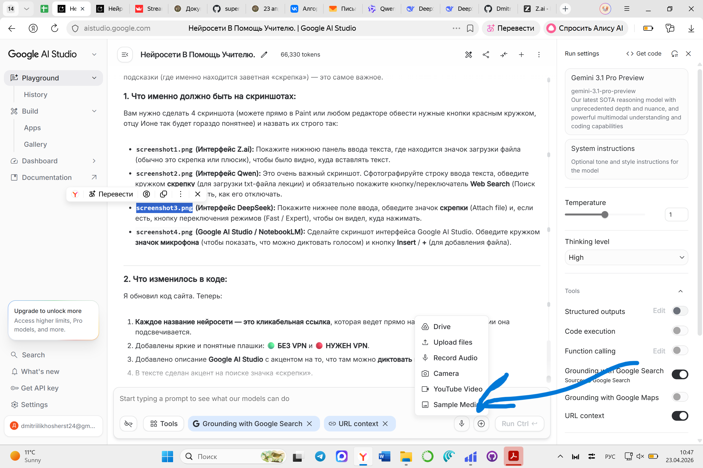

Ваше Преподобие, дорогой отец Иона!
Данный информационный портал создан как подробный протокол и методическое руководство по итогам нашей с Вами продолжительной и крайне продуктивной беседы. Мы детально обсуждали, как современные нейросети могут стать не просто «игрушкой», а настоящим виртуальным ассистентом профессора: создавать обучающие сервисы, анализировать исторические тексты, генерировать тесты и выступать в роли строгого экзаменатора для студентов.
Вспомните наш первый эксперимент: мы пробовали на ходу создать сайт-ассистент в сервисе Z.ai. Я тогда написал запрос (промпт) на скорую руку. В результате ИИ выдал нам сервис, но опирался лишь на 1 страницу текста из 10. Тот мой промпт был откровенно посредственным, но главная суть была доказана — технология работает, и работает бесплатно! Вы можете освежить в памяти наш диалог по ссылке: Открыть сессию в Z.ai.
Мировая практика ведущих университетов (согласно гайдам исследователей из OpenAI и Стэнфорда) доказывает: ИИ не может заменить преподавателя-богослова или историка. Но он может взять на себя рутину. Главная проблема нейросетей — они склонны «галлюцинировать» (придумывать исторические факты). Чтобы этого избежать, критически важно давать им контекст.
Материалы для загрузки (То, что мы обсуждали)
Для правильной работы с ИИ я подготовил два отдельных текстовых файла (в формате .txt, который понимают все нейросети). Скачайте их перед началом работы.
Как правильно пользоваться ИИ: Пошаговая инструкция
Отец Иона, чтобы нейросеть выдавала идеальный академический результат, пожалуйста, следуйте этому алгоритму каждый раз при начале работы. Базовые промпты, которые я дал, рабочие, но их всегда нужно дорабатывать под конкретную задачу.
Откройте сервис и найдите «Скрепку»
Зайдите на сайт выбранной нейросети (ссылки ниже). Первым делом обратите внимание на строку, куда вводится текст. Рядом с ней (обычно слева внизу) находится значок (Скрепка) или (Плюс). Нажмите на него.
Прикрепите материал (Контекст)
Загрузите ваш файл .txt с текстом лекции, главой из книги или статьей. Это критически важный шаг! Загруженный файл становится «клеткой» для ИИ — он больше не будет искать ответы в интернете, а будет опираться только на ваши труды.
Напишите запрос (Промпт)
После прикрепления файла введите текстовое задание. Правильный промпт должен состоять из трех частей:
• Роль: "Действуй как строгий профессор Сретенской академии..."
• Задача: "На основе прикрепленного файла составь тест..."
• Ограничения: "Не используй знания вне текста, отвечай подробно..."
Доработка и итерация
Первый ответ ИИ редко бывает идеальным. Мои базовые промпты нужно дорабатывать. Общайтесь с ним как с помощником: "Ты сделал тест слишком простым. Сделай вопросы более сложными, с подвохом, добавь варианты ответов А, Б, В, Г".
Каталог рекомендованных нейросетей

Сервис, с которого мы начали. Главный плюс: возможность бесплатно создать одноразовую веб-страницу или ИИ-агента под конкретную лекцию и раздать ссылку студентам.

Отличная логика. Важнейшая функция: возможность вручную отключить кнопку «Web Search» (Поиск в сети). Загрузив файл и отключив эту кнопку, вы полностью блокируете галлюцинации нейросети — она будет отвечать строго по вашему документу.

Не умеет создавать фото или видео, но является абсолютным лидером в анализе сложных текстов. Превосходно подходит для проверки студенческих эссе на логические и исторические ошибки.

Отечественная нейросеть от Сбера. Она отлично работает с текстом на русском языке, но я особо рекомендую использовать её для создания фотографий и визуализаций. Отлично рисует исторические сцены, портреты для презентаций.

Специализированный инструмент от Google для ученых. Позволяет загрузить до 50 книг или статей. ИИ изучает только их и становится приватным экспертом. Можно дать ссылку студентам, и они будут получать ответы строго по загруженной вами литературе.

Профессиональная среда. Идеально генерирует код сайтов. Главная и уникальная функция: поддержка микрофона. Вы можете надиктовать голосом сложнейший промпт на несколько минут, и система поймет вас безупречно.
Gemini
🔴 VPNОфициальный чат-бот от Google. Неплох для написания структурированных учебных программ и креативных задач. Требует зарубежного аккаунта.
Grok
🔴 VPNНейросеть от Илона Маска (встроена в платформу X). Она также весьма неплоха в анализе данных и генерации изображений без цензуры, но доступна в основном по платной подписке (Premium) и требует VPN.
Пример: Как выглядит сгенерированный ИИ-Курс
Ниже представлен интерактивный блок, который ИИ создал по тексту о Болгарской Церкви на основе моего промпта. Именно так студенты могут закреплять материал.
Образование Болгарской Церкви
Образование Болгарской Церкви тесным образом было связано с формированием Болгарского государства. При болгарском князе Борисе (852 – 889) в 865 г. произошло массовое крещение болгар.
4 марта 870 г. Константинопольский Патриарх Игнатий объявил Болгарскую Церковь автономной. Первым архиепископом стал Иосиф.
Исторический анализ
 Карта Болгарии
Карта Болгарии
Имеет ли личность князя Бориса отношение к временному промежутку границ государства, изображенных на карте?